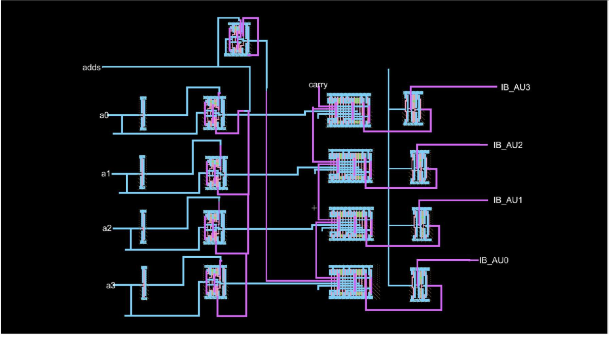

ENCE 3501-1 / Digital & VLSI
CMOS Arithmetic Logic Unit
Transistor-level arithmetic and logic circuit design using Electric VLSI and SPICE.
Project overview
The final project contains an Electric VLSI library, transistor-level SPICE decks, simulation logs and raw simulation output. The inspected arithmetic subcircuit exposes four-bit A and B inputs, add/subtract selection, carry and enable signals.
Engineering implementation
- Designed CMOS logic using NMOS and PMOS devices in the MOSIS mocmos technology.
- Exported SPICE netlists for circuit simulation.
- Documented the final design in a project report.
Results & scope
The design and simulation artifacts are available. Numerical timing, power and simulation pass/fail claims are omitted because the PDF report could not be read through the connector.
Original project artifacts
Design gallery

SPICE / ELECTRIC VLSI
.SUBCKT ALU__Alu2 + a0 a1 a2 a3 adds + b0 b1 b2 b3 carry En + gnd IB_AU0 IB_AU1 + IB_AU2 IB_AU3 vddInterface excerpt from Alu2_sim.spi (line wrapped for display).